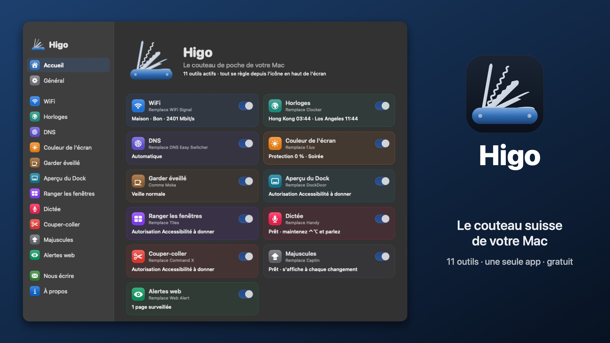

Higo
Le couteau suisse de votre Mac : 11 outils dans une seule app.
Your Mac's Swiss army knife: 11 tools in one app.
Gratuit. macOS 14 Sonoma ou plus récent, Mac Apple Silicon (M1 ou plus récent).
Free. macOS 14 Sonoma or later, Apple Silicon Mac (M1 or later).

Une app au lieu de onze
One app instead of eleven
Chaque outil s'active ou se coupe d'un clic. Mode standard pour aller à l'essentiel, mode expert pour tout régler. Tout se commande depuis l'icône en haut de l'écran.
Each tool turns on or off with one click. Standard mode for the essentials, expert mode to fine-tune everything. Everything is reachable from the icon at the top of the screen.
WiFi
WiFi
La qualité de votre WiFi en un coup d'œil, avec le signal en direct. Remplace WiFi Signal.
Your WiFi quality at a glance, with live signal. Replaces WiFi Signal.
Horloges
Clocks
L'heure de vos villes préférées dans la barre des menus. Remplace Clocker.
The time in your favourite cities, in the menu bar. Replaces Clocker.
DNS
DNS
Changez de DNS en un clic : plus rapide, plus sûr, sans pub. Remplace DNS Easy Switcher.
Switch DNS in one click: faster, safer, ad-free. Replaces DNS Easy Switcher.
Couleur de l'écran
Screen colour
Moins de lumière bleue le soir, avec horaires et transition douce. Remplace f.lux.
Less blue light in the evening, with schedules and smooth transition. Replaces f.lux.
Garder éveillé
Keep awake
Empêchez le Mac de s'endormir, le temps qu'il faut. Remplace Amphetamine.
Keep your Mac awake for as long as you need. Replaces Amphetamine.
Aperçu du Dock
Dock preview
Survolez une icône du Dock pour voir ses fenêtres et l'agenda du jour. Remplace DockDoor.
Hover a Dock icon to see its windows and today's calendar. Replaces DockDoor.
Ranger les fenêtres
Window snapping
Glissez une fenêtre contre un bord, ou ⌃⌥ + flèche. Remplace Tiles.
Drag a window to an edge, or ⌃⌥ + arrow. Replaces Tiles.
Dictée
Dictation
Maintenez un raccourci et parlez : le texte s'écrit tout seul, sans internet. Remplace Handy.
Hold a shortcut and speak: the text types itself, offline. Replaces Handy.
Couper-coller
Cut and paste
⌘X puis ⌘V pour déplacer des fichiers dans le Finder. Remplace Command X.
⌘X then ⌘V to move files in the Finder. Replaces Command X.
Majuscules
Caps Lock
Voyez tout de suite quand le verrouillage des majuscules est activé. Remplace Captin.
See at once when Caps Lock is on. Replaces Captin.
Alertes web
Web alerts
Soyez prévenu quand une partie d'une page web change. Remplace Web Alert.
Get notified when part of a web page changes. Replaces Web Alert.